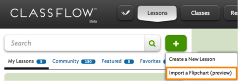

Having your students bring their own technology into your classroom can be pretty frightening. There are reasons 10 years ago technology was banned from classrooms, mostly because teachers had little control.
Having your students bring their own technology into your classroom can be pretty frightening. There are reasons 10 years ago technology was banned from classrooms, mostly because teachers had little control.
- How satisfied are you with the import process?
- What changes would you want to see in the aspects of the flipchart that did import?
- Are there any features of your clipahrt that not import that you would consider critical?
- Would you recommend the flipchart import to a colleague who currently uses ActivInspire?

Select Import a Flipchart (preview) and browse your computer for your desired flipchart.
ClassFlow will import your file and convert it into a lesson.
Once you have reviewed your Flipchart, please share your thoughts below. Your feedback is invaluable and helps us ensure that we are laser focused on the features that matter most to you. We're listening!
Discuss with the Community